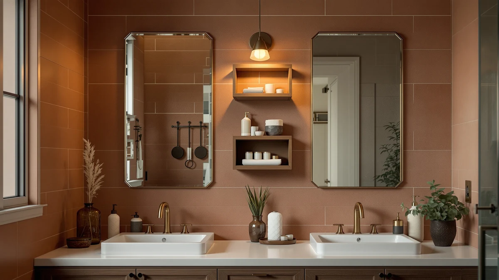

The Best Bathroom Organizers Under $50 (2026)
Prices and picks verified as of September 2026. Independent, reader-supported reviews.


Quick Answer
The best bathroom organizers under $50 turn a cluttered under-sink cabinet into space you can actually use, without a renovation budget. For most people, the Sevenblue 3 Pack Multi-Purpose Pull-Out at $22.99 is the pick: three separate slide-out bins that keep bottles and supplies visible instead of buried behind the pipes. If you need taller, stacked storage instead, the Delamu 2 Sets of 3-Tier is a close runner-up.
Our pick: Sevenblue 3 Pack Multi-Purpose Pull-Out, $22.99 Check Price on Amazon
Bottom line: our top pick is the Sevenblue 3 Pack Multi-Purpose Pull-Out Storage Organizers at $22.99. The best budget option is the Simple Trending Under Sink Organizer 2 Pack at $19.99.
Things to Know Before You Buy
- Measure before you buy. The P-trap and supply lines eat several inches out of most under-sink cabinets. A 12 to 15 inch organizer usually clears them; a full-width shelf often does not.
- Pull-out beats stationary in a dark cabinet. Bins that slide toward you, like the Sevenblue, let you see what you own instead of kneeling on the floor and unloading a shelf to find one bottle.
- Tiered racks separate items by height. A 3-tier design like the Delamu keeps tall bottles on one level and small items on another, instead of stacking everything on a single flat surface.
- Metal-and-wood frames hold up better than plastic-only bins in a bathroom cabinet that stays damp, since they resist the warping and cracking that thin plastic develops after a year of daily use.
- None of these bathroom organizers under $50 cost more than $40, so the real differences come down to configuration, pack size, and how many pieces you get, not brand markup.
The best bathroom organizers under $50 solve a problem that has nothing to do with style: they turn a dark, awkward cabinet under your sink into storage you can actually use. Most under-sink cabinets waste a third of their volume around the P-trap and supply lines, so a flat shelf or a pile of loose bottles never quite works. We looked at pull-out bins, stacked tiers, and multi-piece sets built to work around plumbing, and narrowed the field to seven picks that fit a typical vanity cabinet without pushing past a $50 budget.
Our pick, the Sevenblue 3 Pack Multi-Purpose Pull-Out, costs $22.99 and gives you three separate bins you slide out one at a time instead of digging through a single crowded shelf. If your cabinet is tall enough for stacked storage instead, the Delamu 2 Sets of 3-Tier at $29.99 gives you two full racks, enough to organize both doors of a double-vanity at once. Every other pick here trades a little on price or configuration to solve a slightly different version of the same cabinet.
This guide is for anyone staring at a jumbled under-sink cabinet who wants a fix that costs less than $50 and takes ten minutes to set up, not a full vanity renovation. We compared material, published dimensions, pack size, and price across all seven, and we call out the honest tradeoffs on each one below.
Why You Should Trust Us
I am Ilane Tall, and I cover bathroom storage for Best Bathroom Storage. I have spent enough time crouched in front of cluttered vanity cabinets to know the difference between an organizer that earns its shelf space and one that adds another box to dig through. For this guide to the best bathroom organizers under $50, I compared manufacturer specs, pricing, and patterns across verified buyer reviews rather than relying on marketing copy.
I do not run a fake testing lab and I do not quote experts who do not exist. When I flag a drawback, it comes from the product's own specs or a consistent pattern reviewers report, not a guess. My job is to tell you which under-$50 organizer fits your cabinet and your budget, then point you to the right one and stop.
How We Picked
The first filter for any bathroom organizer under $50 is the price ceiling itself: anything that crept past $40 in our research got cut before it made this list, leaving room for shipping and tax without breaking the budget. From there we looked at three configurations that solve the under-sink problem in different ways: pull-out bins, stacked tiered racks, and simple single-unit organizers.
We ranked the remaining candidates on published dimensions relative to a typical under-sink cabinet, on build material, and on how many pieces you get for the price. We favored organizers built from metal and wood over plastic-only designs, since owners consistently report that plastic bins warp and crack faster in a damp cabinet. We also weighed pack size, since a 2-piece set that splits storage across two cabinet doors solves a different problem than one wide bin.
We cross-referenced pricing and specs against our own product database rather than trusting a single listing, and we excluded anything without a verifiable price or dimension. The seven picks below are the ones that balanced price, capacity, and fit best.
How We Compared
To judge each bathroom organizer under $50, we compared published width, depth, and material against the dimensions of a standard under-sink cabinet, checking whether each pick would clear a typical P-trap without modification. We researched pack configuration next: a 3-pack of pull-out bins solves a different layout problem than a 2-set of 3-tier racks, so we grouped picks by how they actually sit in a cabinet rather than by price alone.
We also compared pricing across all seven to flag where a higher cost bought more capacity and where it did not, and we cross-checked our notes against verified owner reviews to see whether real buyers reported the same fit and durability the specs implied. We do not assign numeric scores here, because an organizer either fits your cabinet and holds its shape or it does not.
Our Picks

Sevenblue 3 Pack Multi-Purpose Pull-Out
What we like
- Three separate pull-out bins for one price, instead of a single shelf
- Slide-out design puts everything at eye level without kneeling to unload a shelf
- Metal-and-wood build holds up to a damp cabinet better than plastic-only bins
- 12.85-inch width fits most standard under-sink cabinets around the pipes
Flaws but not dealbreakers
- Three bins take up a full shelf, so a narrow cabinet may only fit two
- The pull-out track needs a flat, level surface to slide smoothly
- Assembly is required before the bins are ready to load
| Material | Metal / wood |
| Size | 12.85 Inch |
The Sevenblue is the bathroom organizer under $50 we recommend first, because it solves the whole cabinet at once instead of one bottle at a time. The three-bin set spreads storage across separate pull-out sections, so cleaning supplies, toiletries, and backstock each get their own space rather than piling into one shelf. At $22.99 for three bins, it costs less than several single-piece organizers on this list, and the 12.85-inch width fits the clear space most under-sink cabinets leave around the P-trap.
The pull-out mechanism is the real advantage here. Instead of unloading a static shelf to find what is in the back, you slide the bin you need toward you and see everything at once. The tradeoff is footprint: with all three bins in place, a shallow or narrow cabinet can run out of room, so measure the width on either side of your pipes before ordering. Once it is set up on a flat cabinet floor, reviewers consistently note that the bins slide smoothly and stay put through daily use.

Delamu 2 Sets of 3-Tier
What we like
- Two complete 3-tier racks cover both cabinet doors in one purchase
- Stacked tiers keep tall bottles separate from small, easily lost items
- Metal-and-wood construction outlasts all-plastic stacking shelves
- Works as a matching pair or split between two different cabinets
Flaws but not dealbreakers
- At $29.99, it costs more than several single-rack picks on this list
- Three-tier height needs a taller cabinet than a low, shallow one
- Two separate racks mean assembling twice, not once
| Material | Metal / wood |
| Size | 2 Pack 3-Tier |
The Delamu earns runner-up because it solves a problem the pull-out bins do not: a double-door vanity with two separate cabinets to organize. Instead of buying two different organizers, you get two matching 3-tier racks in one $29.99 purchase, each one stacking small items on top and taller bottles below. The tiered layout also suits anyone who prefers fixed shelves you can see into at a glance over bins you have to pull forward.
The extra rack is also the tradeoff. At $29.99 it costs more than several single-piece organizers here, and the three-tier height needs enough clearance that a shallow, low cabinet may not accommodate it. Reviewers report the metal-and-wood frame holds its shape better than the all-plastic stacking shelves it tends to replace, so once it is set up it does not sag under a full load of bottles.

Fabspace Bathroom Under Sink Organizers
What we like
- Single-unit design means one setup instead of matching several pieces
- Metal-and-wood build at a mid-range price of $24.99
- Sits flat under a sink without needing a multi-piece layout to plan first
- Simple shape adapts to cabinets with an unusual pipe layout
Flaws but not dealbreakers
- One organizer holds less total volume than a 2-piece or 3-pack set
- Costs more than the cheapest single-unit picks on this list
- No published depth measurement, so double-check clearance before buying
| Material | Metal / wood |
| Size | — |
The Fabspace is the pick for anyone who wants to solve their under-sink cabinet with a single purchase rather than planning out a multi-bin layout. At $24.99, it sits between the cheapest single-unit organizers and the pricier multi-piece sets on this list, and the metal-and-wood construction matches the build quality of the pull-out and tiered options above it.
Because it is one unit rather than a set, it holds less total volume than the Sevenblue's three bins or the Delamu's two racks, so it suits a smaller cabinet or a household that only needs to corral a handful of items. Owners report it slides into place easily around typical plumbing, though the listing does not publish an exact depth, so measure your cabinet before you order if the space is unusually tight.

ADBIU Under Sink Organizer 2
What we like
- Two-piece system arrives as one order instead of mixing separate products
- Metal-and-wood build matches the sturdier picks on this list
- Still comes in under the $50 ceiling for this guide
- Two units let you split storage across a wider cabinet
Flaws but not dealbreakers
- At $39.99, it is the most expensive pick in this roundup
- No published depth measurement, so confirm clearance first
- Two units to assemble and position instead of one
| Material | Metal / wood |
| Size | — |
The ADBIU earns its spot here for buyers who would rather make one purchase than assemble a mix of smaller organizers to fill a cabinet. The two-piece set gives you enough coverage for a full-width vanity in a single order, and the metal-and-wood build holds up the same way the other sturdier picks on this list do. At $39.99 it still lands comfortably under the $50 ceiling for this guide, even if it is not the cheapest option here.
That higher price is the honest tradeoff: at $39.99, it costs more than the pull-out and single-unit picks above, so it makes the most sense when you value a complete, ready-to-go system over squeezing out the lowest possible price. As with the Fabspace, the listing does not publish an exact depth, so measure your cabinet before ordering if your plumbing runs close to the cabinet opening.

ARSTPEOE Under Sink Organizer -
What we like
- Single-unit footprint suits a narrower cabinet than a multi-piece set
- At $21.99, one of the lower prices in this roundup
- Metal-and-wood build rather than a plastic-only frame
- Simple design with no assembly steps to plan across multiple pieces
Flaws but not dealbreakers
- Single unit holds less than a 2-piece or 3-pack set
- No published dimensions beyond material, so measure your cabinet first
- Best suited to smaller storage needs, not a full cabinet overhaul
| Material | Metal / wood |
| Size | — |
The ARSTPEOE Under Sink Organizer is the pick for a cabinet too narrow for the Sevenblue's three-bin footprint or the Delamu's stacked tiers. At $21.99, it lands near the lower end of this list's pricing while keeping the same metal-and-wood construction as the pricier multi-piece options, so you are not sacrificing build quality to save space.
The compromise is capacity: a single unit simply holds less than a 2-piece or 3-pack set, so it fits best in a smaller cabinet or as a supplement to existing storage rather than a full replacement. The listing does not publish exact dimensions, so confirm the clear width around your pipes before ordering, especially if your bathroom is on the smaller side to begin with.

Yieach 2 Pack 14.6″ Deep
What we like
- 14.6-inch deep drawers hold more front-to-back than a shallow bin
- Two-pack format lets you fill both sides of a wide cabinet
- Tied for the lowest price on this list at $19.99
- Metal-and-wood build stands up to a damp cabinet over time
Flaws but not dealbreakers
- 14.6 inches of depth needs a cabinet that goes back that far
- Deep drawers can bury smaller items at the back if not organized
- Two units to install rather than one
| Material | Metal / wood |
| Size | — |
The Yieach 2 Pack stands out for its 14.6-inch depth, which suits a cabinet with more room front-to-back than most under-sink spaces offer. That extra depth means each drawer holds more per pull than a shallow bin, and the 2-pack format lets you outfit both sides of a wide vanity for $19.99, tied with the Simple Trending for the lowest price in this roundup.
The same depth that gives it capacity is also the thing to check first: a shallower cabinet will not have the clearance for a 14.6-inch drawer to slide fully open. Owners report that once it fits, the deep drawers swallow backstock and bulk items well, though it helps to group smaller items in a caddy inside the drawer so they do not get lost at the back.

Simple Trending Under Sink Organizer
What we like
- Two organizers for $19.99, tied for the lowest price in this guide
- 2-pack format covers two spots without buying twice
- Metal-and-wood build instead of a flimsier all-plastic frame
- Simple shape adapts to more than one cabinet layout
Flaws but not dealbreakers
- No published dimensions, so measure your cabinet before ordering
- Basic design without the pull-out or tiered features of pricier picks
- Two units still mean two separate placements to plan
| Material | Metal / wood |
| Size | 2 pack |
If price is the deciding factor, the Simple Trending 2-pack ties the Yieach for the lowest total cost in this guide at $19.99 for two organizers. That works out to roughly $10 per unit, cheaper than any single-piece pick here, while still using the same metal-and-wood construction as the pricier options rather than a throwaway plastic bin.
The savings come from a simpler design: there is no pull-out track or stacked-tier structure, only a straightforward frame that sits in place. It is the right call when you need two basic organizers rather than one feature-heavy system, though the listing does not publish exact dimensions, so confirm the fit against your own cabinet before you order.
Quick Comparison
| Product | Material | Price | Rating | Best for | Get it |
|---|---|---|---|---|---|
| Sevenblue 3 Pack Multi-Purpose Pull-Out | Metal / wood | $22.99 | 4 | Three slide-out bins in one set | View on Amazon → |
| Delamu 2 Sets of 3-Tier | Metal / wood | $29.99 | 4 | Double-door vanities needing two racks | View on Amazon → |
| Fabspace Bathroom Under Sink Organizers | Metal / wood | $24.99 | 4 | A single, no-fuss organizer | View on Amazon → |
| ADBIU Under Sink Organizer 2 | Metal / wood | $39.99 | 4 | One complete two-piece system | View on Amazon → |
| ARSTPEOE Under Sink Organizer - | Metal / wood | $21.99 | 4 | Narrow cabinets | View on Amazon → |
| Yieach 2 Pack 14.6″ Deep | Metal / wood | $19.99 | 4 | Deep cabinets with extra clearance | View on Amazon → |
| Simple Trending Under Sink Organizer | Metal / wood | $19.99 | 4 | The lowest price for a two-piece set | View on Amazon → |
What is the best bathroom organizer under $50?
Among the best bathroom organizers under $50, the Sevenblue 3 Pack Multi-Purpose Pull-Out is the strongest all-around pick at $22.99.
Will an under-sink organizer actually fit around the pipes?
Most under-sink cabinets lose several inches of usable width to the P-trap and supply lines, which is why pull-out bins and multi-piece sets tend to fit better than a single wide shelf.
The Competition
Plenty of products market themselves as bathroom organizers under $50 without earning a spot on this list. We left the following categories off for specific reasons.
All-plastic stackable bins. These show up cheapest in a basic search, but owners consistently report that thin plastic warps and cracks after a year of sitting in a humid under-sink cabinet. Every pick that made this list uses a metal-and-wood frame instead, which holds its shape far longer.
Adhesive racks mounted inside the cabinet door. These clear the price bar and avoid taking up floor space, but they only work on a smooth, flat door panel, and reviewers report the adhesive struggles once a door gets any daily slamming. We stuck to floor-based organizers that do not depend on a bond holding under repeated use.
Single flat shelves with no dividers. A bare shelf technically adds storage, but it does not solve the actual problem, which is finding a specific bottle in a dark, crowded cabinet. Every pick here uses bins, tiers, or drawers that separate items instead of only raising them off the cabinet floor.
Frequently Asked Questions
What is the best bathroom organizer under $50?
Among the best bathroom organizers under $50, the Sevenblue 3 Pack Multi-Purpose Pull-Out is the strongest all-around pick at $22.99. It gives you three separate pull-out bins instead of one crowded shelf, and the metal-and-wood build costs less than several single-piece organizers on this list.
Will an under-sink organizer actually fit around the pipes?
Most under-sink cabinets lose several inches of usable width to the P-trap and supply lines, which is why pull-out bins and multi-piece sets tend to fit better than a single wide shelf. Measure the clear space on either side of your pipes before ordering, since a 12 to 15 inch organizer usually clears them while a full-width shelf may not.
Should I buy a pull-out bin or a tiered shelf for under $50?
Pull-out bins, like the Sevenblue, work best when you want to see everything at a glance without kneeling on the floor. Tiered shelves, like the Delamu 2 Sets of 3-Tier, work better when you need to separate tall bottles from small items across two stacked levels. Both styles stay under $50, so the choice comes down to how you use your cabinet, not price.